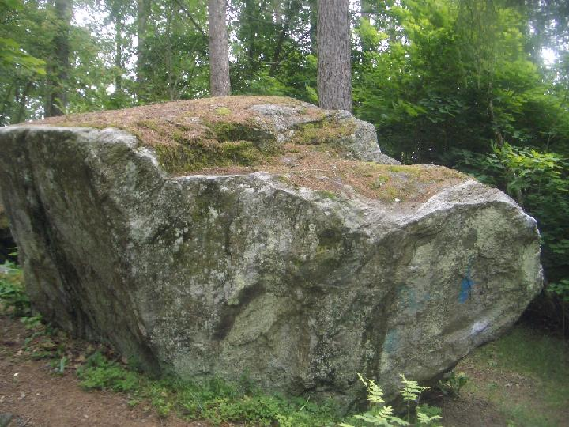
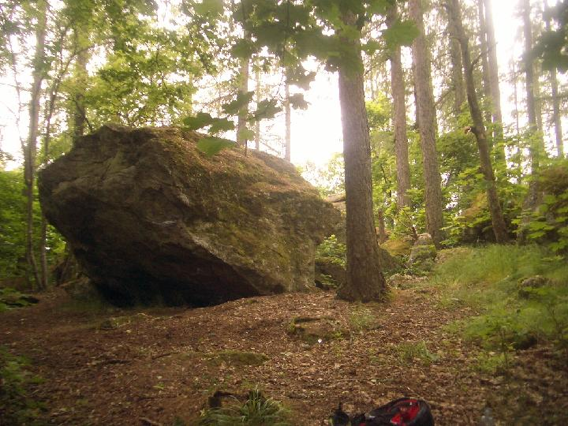

Gryta
Lat: 59.642417
Long: 16.532707
Allmänt
Några kilometer från Västerås centrum ligger kanske Västerås populäraste boulderområde. Problemen håller hög klass och är av varierande art.
Vägbeskrivning
(markeringen på kartan visar Apalbyskolan)
<div style="width: 350; float: right; margin-left: 10px; padding: 3px; border: solid 1px #cccccc;">
<googlemap version="0.9" lat="59.642764" lon="16.532192" type="map" zoom="13" width="350" height="350">
59.642417, 16.532707, Norra Gryta
</googlemap>
</div>
Norra Gryta:
Från Rocklundamotet, kör norrut på Vasagatan och ta vänster in på Norrleden. Sväng höger, vid trafikljus, in på Önstavägen. Passera butiken, fortsätt förbi ladugården och höger in på Lodjursvägen. Sväng sedan första vänster in på Lokattsvägen och sedan höger in på Ekorrvägen. Följ vägen vänster och pakera innan vändplan. Blocken ligger strax till höger. Det första blocket du möter - förutom det på hörntomten - är gungblocket. Det ligger strax intill vägen. En bit in till vänster ligger Motörheadblocket. Motörheadtraversen är den första delen av stenen du möter, denna del är vänd österut.
Södra Gryta:
Kör in på Önstavägen och sväng därefter höger in på Älggatan vid posten och Servus. Åk ett par hundra meter och ta sedan vänster in på Rådjursgatan. Efter ett par hundra meter sväng vänster på Bävergatan nu bör du se Apalbyskolan när du kommer till vändhållplatsen. Parkera på skolans parkering. Blocken ligger i skogen 120 meter syd/väst om Apalbyskolan, ca 500 m söder om norra området.
Beskrivning
Gryta som består av två områden, Norra och Södra, hör sannolikt till Västerås mest besökta område. Närheten, dvs. på cykelavstånd, även en blåsig dag med paddan på ryggen, är troligen den bästa förklaringen till dess popularitet.
Stenarna är mestadels låga men ett mindre antal höga problem finns att tillgå.
Området har storheter som Erik Massih som förstabestigare till ett flertal problem. Stenarna bjuder på stor variation i boulders: tekniskt, hårt, lätt och sva för att nämna något.
Sektorer
Norra
-
- Uppvärmningen, assis
- 6A+
- Starta sittande med vänster hand i sidtag och höger på liten krimp. Drag sedan rakt upp till strax under kanten. Avsluta med mantlingen.
- 1
- Motörheadtraversen
- 6A
- Starta till vänster, traversera under taket fram till björken.
- 1
- Motörhead extend
- 6C
- Klättra traversen och avsluta med Eriks dieder. Lång och fin.
- 2
- Lemy
- 5A
- Starta till vänster om taket och gå sedan rakt upp.
- 3
- Inte skräckmanteln
- 6B
- Starta under taket och gå sedan rakt upp. Avslutar i en delikat mantling.
- 4
- Sit on my face
- 6B+
- Sittstarten till Inte Skräckmanteln.
- 5
- Eriks dieder
- 6B+
- Klättra diedern till vänster om björken. Görs med fördel i sittande start.
- 6
- Till höger om Eriks dieder
- 6B
- Klättra den högra delen av areten. Går att starta sittande.
- 7
- Rule Gratinia
- 6A+
- Den låga traversen till höger om björken. Bra för magen. Avsluta vid juggarna till höger.
- 8
- Better to burn out than fade away
- 6B+
- Starta där Rule Gratinia slutar och gå sedan höger via de tillverkade hålen och sedan upp via jugg och sprickor.
- 9
- Better to boulder than fade away on porr
- 6B+
- Långa traversen höger till vänster. Starta på stenrampen, vandra sedan vänster runt ett balansigt hörn, vidare runt kanten och sedan via de tillverkade hålen till Rule Gritanias slut, eller ända fram till björken.
- 10
- Not to borr to boulder
- 6B+
- Starta vid kluvna stenen. Höger till vänster och upp innan de tillverkade hålen.
- 11
- Fingrar i brevlådan
- 6C
- Låg start i trekantsgreppet, via de fula hålen och sedan upp höger via jug och sprickor.
- 12
- Blixt Gordon
- 6C+
- Som fingrar i brevlådan fast utan de tillverkade greppen.
- 13
- BGI, Blixt Gordon Intergalaxial
- 7A+
- Starta som Better to boulder than fade away on ... och sedan lågt vänster, via den tydliga klossen in i Blixt Gordon.
- 14
- Gröna hissen
- 6A
- Starta sittande vid kluvna stenen, sedan rakt upp på den stora hyllan och vidare till topps.
- 15
- Upphill Racer
- 6A
- Klättra den högra svagatan, på sidan som vätter mot gatan.
- 16
- Bob Lindeman
- 6A
- Den vänstra svagatan.
- 17
- Egon Kärman
- 5A
- Samma start som Bob L men avsluta till vänster.
- 18
- Slappen
- 6B
- Höga blocket, 25 m öster om Motörheadblocket. Travers på blockets södra sida. Starta från björken, teknisk i starten sedan upp vänster via en spricklinje.
- 19
- High Voltage
- 6C
- Höga blocket. Starta på nordsidan, dess högra del. Väggklättring utan arete med dragning till vänster och sedan upp. HÖGT!
- 20
- Svatraversen
- 6B
- Höga blockets östra sida. Travers från vänster till höger under det lilla taket. Kan med fördel avslutas upp i den högra kanten. I sådana fall högt!
- 21
- Ett problem
- 4C
- I Ekkorvägens hårnål, intill cykelbanan står ett block med en tripodmast på. Klättra problemet i sänkan. Dålig landning. Denna grupp av stenar bjuder dock på viss potential för den som står ut med den ojämna marken.
- 22
- Åka 50-tals bil
- 4C
- Gungblocket, precis intill Ekorrvägen. Den vänstra delen av skölden, rakt upp över kanten. Startar från två stenar.
- 22.5
- Nordväggen Direkt
-
- Gungblocket. Klättra diretissiman utan högra areten. Tunn och balansig svaklättring.
- 23
- Osköne Ohlsson
- 5A
- Gungblocket. Den högra areten som klättras med kroppen till vänster om kanten.
- 24
- Slappetislapp
- 6C
- Sloptraversblocket, 100 m söder om Motörheadblocket. Den låga traversen vänd mot cykelbanan, dåliga fötter.
- 25
- Slappetislapp, assis
- 7A+
- Sloptraversblocket. Starta som Inför Foucault och sedan travers i Slappetislapp istället för mantlingen.
- 26
- Mantlingen
- 6A
- Sloptraversblocket. Starta en meter vänster om starten till Slappetislapps högra start. Mantla rakt upp.
- 27
- Inför Foucault
- 7A+
- Sloptraversblocket. Sittstart till mantlingen, händerna på två tydliga krimpers.
- 28
- Baksidesvaet
- 4B
- Svatraversblocket: One move wonder på sydöstsidan.
- 29
- Svaareten
- 6A
- Sloptraversblocket. Till höger om baksidasvaet, balansig.
- 30
- Simpel
- 4A
- Sloptraversblocket. Blockets östra sida, etablera på väggen sedan ett drag till jug, därefter ännu lättare.
- 31
- Utan namn
- 6A+
- Sloptraversblocket. Cruxbetonad led till vänster om björken. Etablera lågt och sedan upp.
- 32
- Fulhålsfobi
- 7B
- Motörheadblocket. Som Better to boulder than fade away on ... , dock utan fulhålen. Klättra lågt förbi fulhålen. Avsluta vid björken. Morphobrasklapp!
- 33
- Nitty Gritty
- -
- Till höger om Gröna Hissen, som den nu mer heter. Starta med vh på sloper och hh på krimp. Upp långt till grepp och sen lättare via bra lister till toppen.
- 34
- Lilla återkomsten
- 6C
- Stora blocket. Sittstart längst till vänster på blockets västra sida, drag upp till h. Areten eliminerad.
Södra
- 1
- Catsch
- 5B
- Överhängande stenen, med klätterytan vänd mot cykelbanan. Sittande start under den stora juggen. Upp på rampen och vidare över kanten.
- 2
- Hörn Catsch
- 5B
- Överhängande stenen. Samma som Catsch men med start runt hörnet på den blanka grejen.
- 3
- Catsch traversen
- 6A+
- Överhängande stenen. Samma som Catsch men hangla vidare till vänster och upp där hyllan smalnar av.
- 4
- Långa Catsch traversen
- 6B
- Överhängande stenen. Samma som föregående men mantla upp efter nosen, i svackan på hyllan.
- 5
- Utan gnäll
- 6C+
- Överhängande stenen. Sittande start till vänster under blocket. Slabba kanten och drag sedan långt vidare och upp.
- 6
- Utan direkt gnäll
- 7A
- Överhängande stenen. Direktdrag till juggen.
- 7
- PV till toppen (Patriks vänstra)
- 6B
- Överhängande blocket. Sittstart på vänstra ytterkanten, vidare till toppen på sloper med en dragning åt höger.
- 8
- Pain
- 5A
- Painblocket. Det höga vassa blocket som syns bra från cykelbanan. Klättra den vassa sprickliknanade formationen på sydsidan, mitt emot den låga stenen man inte vill landa i.
- 9
- Variant av pain
- 5A
- Painblocket. Något till höger om Pain, strax innan areten, finare.
- 10
- Backside of pain
- 6B+
- Painblocket. På norra sidan, den lätt överhängande. Klättra upp mitt på stenen där den är som högst. Sittande 6C+.
- 11
- Pains Arete
- 6A
- Painblocket. Starta sittande där blocket är som lägst, nordvästra hörnet, vrid upp på kanten och följ areten till toppen.
- 12
- Pains vänstra
- 6B+
- Painblocket. Starta lågt med händerna på den slopiga hyllan på stenens nordöstra hörn, det som vätter mot cykelbanan. Klättra sedan höger in i Backside of pain.
- 13
- Pains Panidol
- 6C+
- Painblocket. Starta sittande vid pelarformationen, strax höger om sittstarten till Backside of pain. Drag först till en list till höger sedan in i Backside of pain via den lösa klossen. Toppa ut utan att använda nyckelgreppet på areten.
- 14
- Windmill
- 6A
- Painblocket. Sittande vid listen i nordöstra hörnet, sedan rakt upp via den oborstade gatan.
- 15
- Ingen plats för celluliter
- 6B+
- Painblocket. Liggstart där stenen är som lägst, västsidan. Kläm in dig under blocket, långt drag sedan känslig mantling.
- 16
- Utan namn
- 5A
- Painblocket, sydvästra hörnet. Bred sittande start till höger om Ingen plats för celluliter. Avsluta i en fin mantling.
- 17
- Traversen
- 7A
- Painblocket. Starta sittande i Backside of pain och traversera till vänster runt blocket fram till Utan namn, mantla upp.
- 18
- Gritstonetraversen
- 5A
- Gritstoneblocket. Starta till vänster, nordvästra hörnet, och hangla till höger runt hörn nummer två och avsluta med en mantling vid bogen.
- 19
- Grodan Gritt
- 6B+
- Gritstoneblocket. Sittstart i nordsidans vänstra del. Vänster hand i sidtag och höger på låg eller hög crimp. Ett drag till toppen, mantla eller klättra traversen.
- 20
- Gritstonemantlingen
- 3C
- Gritstoneblocket. Mantla upp på nordsidan.
- 21
- IFÖ
- 6A
- Gritstoneblocket. Sittstart vid bogen. Till toppen och avsluta i en lätt mantling. Sedan startgreppet lossnade 2005 har starten bivit något mer kramig.
- 22
- IFÖ Revival
- 6A+
- Gritstoneblocket. Sittstart till vänster om bogen. Vänster hand på låg hylla och höger på hög crimp, mantla ut med strikt hållen linjeföring i svackan/skålen.
- 23
- Foot Loose
- 3C
- Gritstoneblocket, på sydsidan. Upp utan händer.
- 24
- Baksidan
- 5A
- Gritstoneblocket. Ett par krystade flytt på östsidan. Leden gjordes om i en vackrare elimination av Malin Berglind 2005. Starta på små krimpers och sedan upp åt höger, via ytterligare krimp/pinch grepp. Eliminationen 6B.
- 25
- One move wonder
- 5A
- Gritstoneblocket. Etablera i sprickan och på slopigt grepp för vänstern. Ett flytt till toppen. Sittstart 6B+.
- 26
- Gritstone spinal
- 7B
- Gritstoneblocket. Liggstart, östsidan, i blockets underkant på två tydliga grepp. Strikt linjeföring på krimp och slop utan att använda vänster kant. Teknisk och hård.
Bilder Södra

Gritstoneblocket, längst sydvästerut i Södra Gryta-området.

Överhängande stenen, som man möts av när man kommer in genom buskaget från cykelvägen, längst sydösterut i Södra Gryta-området. Bakom denna ligger Gritstoneblocket en 15 meter längre bort västerut , Painblocket ligger rakt åt höger från denna sten ungefär 25 meter norrut.
Kategori:Västerås
Kategori:Bouldering
Kategori:Bimbo
Kategori:Behöver kvalitetssäkras
Kategori:Saknar karta
Kategori:Saknar koordinater
Kategori:Saknar skrivarformattering
Kategori:Saknar skiss